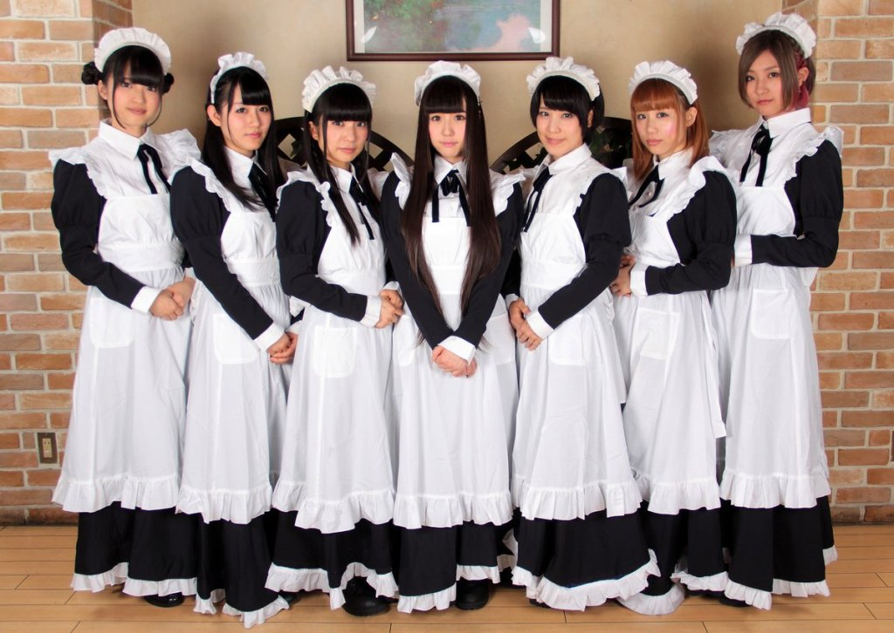
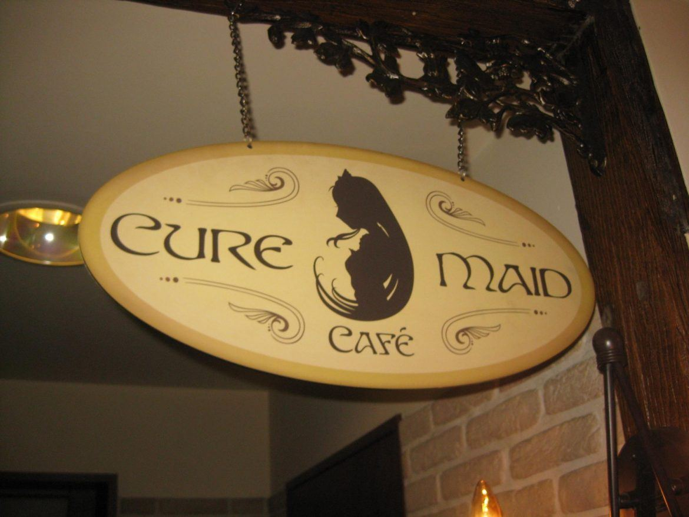
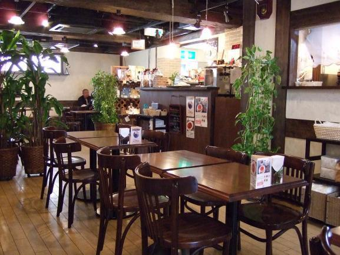

HOME
|MENU|CONTACT|FORUM
The Cure Maid Café is a maid cafe in Akihabara. Kirino attended a first IRL meet up organized by Saori's "Otaku Girls Unite",an online community, in the cafe. It is located at the sixth floor of the Gee Store, near Suehirocho Station.
The Cure Maid Café has a layout similar to a traditional Western restaurant, with wooden chairs and tables, and a dominant earthy color scheme. However, what makes the Cure Maid Café stand out is the attire of its waitresses, whose theme is that of a typical maid café: black and white dresses adorned with ribbons and frills. The waitresses themselves are young as well, with ages probably ranging from middle school to high school level. Kirara Hoshino, the sister of Meruru's voice actor, is known to be one of the workers.
| Day | Business Hours | Last Order |
|---|---|---|
| Monday to Thurdays | 11:00 am ~ 20:00 pm | Food 19:00 pm / Drink 19:30 pm |
| Friday / Saturday | 11:00 am ~ 22:00 pm | Food 21:00 pm / Drink 21:30 pm |
| Sundays and Public holidays | 11:00 am ~ 19:00 pm | Food 18:00 pm / Drink 18:30 pm |
| The day before holidays (Except Sunday) | 11:00 am ~ 22:00 pm | Food 21:00 pm / Drink 21:30 pm |